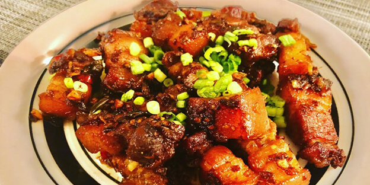
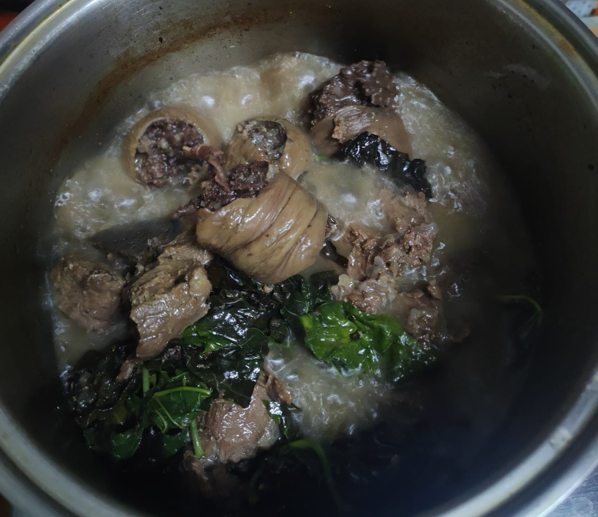

Famous Foods of Mizoram
Bai
Bai Recipe:
- Ingredients:
- 500 grams pork, cut into pieces
- 1 cup bamboo shoots, chopped
- 1 tablespoon fermented soybeans (bai-oi)
- 1 large onion, chopped
- 2-3 green chilies, sliced
- 1 teaspoon ginger-garlic paste
- 1 teaspoon turmeric powder
- 2 tablespoons oil
- Salt to taste
- Fresh coriander for garnish
- Instructions:
- Heat oil in a pan and sauté onions until translucent.
- Add ginger-garlic paste and green chilies. Cook for a minute.
- Add pork pieces and turmeric powder. Cook until pork is browned.
- Add bamboo shoots and fermented soybeans. Mix well.
- Add water as needed and cook until pork is tender and flavors meld together.
- Season with salt and garnish with fresh coriander. Serve hot with rice.
Vawksa Rep

Vawksa Rep Recipe:
- Ingredients:
- 500g pork, cut into pieces
- 1 medium onion, finely chopped
- 2-3 cloves garlic, minced
- 1 tablespoon ginger paste
- 1 tablespoon soy sauce
- 1 teaspoon black pepper
- 1 tablespoon oil
- Salt to taste
- Instructions:
- Heat oil in a pan, add onions, garlic, and ginger. Sauté until onions are translucent.
- Add pork pieces and cook until they start to brown.
- Add soy sauce, black pepper, and salt. Cook for a few more minutes.
- Add a little water and cook until the pork is tender and the sauce has thickened.
- Serve hot with rice or steamed vegetables.
Kawtchung

Kawtchung Recipe:
- Ingredients:
- 1 cup rice
- 1 cup yellow split peas
- 1 tablespoon oil
- 1 medium onion, chopped
- 2-3 cloves garlic, minced
- 1 teaspoon turmeric powder
- Salt to taste
- Instructions:
- Wash rice and split peas thoroughly and soak them for 30 minutes.
- Heat oil in a pan, add onions and garlic. Sauté until onions are golden brown.
- Add turmeric powder and soaked rice and peas. Mix well.
- Add water and cook on low heat until rice and peas are fully cooked.
- Season with salt and serve hot with a side dish or curry.